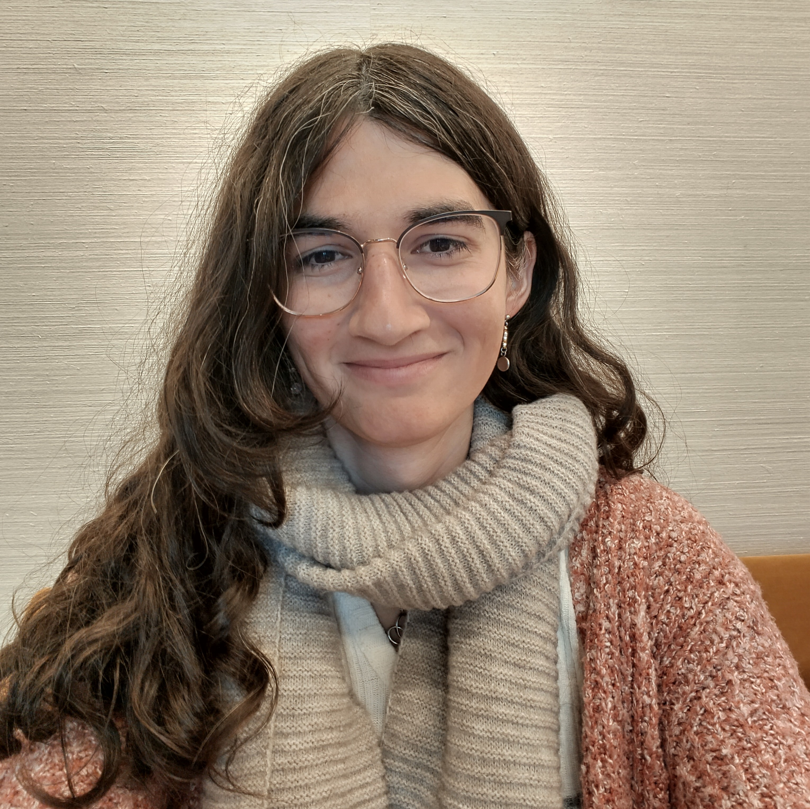

Profile
-
Hometown: Collonge-Bellerive,
GE, Switzerland
Languages: French: (Native), English: (Native), Portuguese: (Native), German: (B1-B2), Japanese: (N3), and Danish: (A2).
Nationalities: Switzerland, USA, and Portugal
Research Interests: High-Level Hardware Language Design, Formal Methods, Reactive / Actor-based Programming models, Modal Logics.
Education
-
Princeton University, Princeton, NJ, USA
Doctor of Philosophy, PhD - Computer Science
Fields: Programming Language Design, Computer Architecture, Compilers
Aug. 2024 - Present -
ETH Zurich, Zürich, ZH, Switzerland
Master of Science, MSc - Computer Science
Major: Secure & Reliable Systems - Minor: Computer Graphics
Sep. 2021 - Apr. 2024 -
EPFL, Lausanne, VD, Switzerland
Bachelor of Science, BSc - Computer Science
Sep. 2016 - Sep. 2020
Current Projects
-
A Unified Language for Hardware-Software Co-design
Designing a language specifically for developing hardware accelerated systems (both hardware and the software driving it), using a reactive programming paradigm.
Collaborators: Kevin Laeufer, Mae Milano
Status: Main dissertation project
June 2025 - Present
( WIP ) -
dvrtl: Deductive Hardware Verification
Designing a deductive verification system for high-level hardware languages, built around the CIRCT compiler.
Collaborators: Kevin Laeufer, Fabian Schuiki, Bea Healy
Status: Current focus (~80% complete)
Oct. 2023 - Present
( dvrtl / CIRCT / dvrtl-spec [2025] / Slides [2025], [2024] / Poster [2024] / Report [2024] ) -
Porting the Clash compiler to CIRCT
Porting the haskall based High-Level hardware language to the CIRCT compiler infrastructure.
Collaborators: Gongqi Huang
Status: Side project
August 2025 - Present
( repo ) -
CHaT: Coordinating Hardware Types
Designing a system allowing for type-system coordination and guarantee enforcement across foreign interfaces in high-level hardware languages.
Collaborators: Leon Schuermann
Status: Side project
November 2025 - Present
( WIP )
Academic Research Experience
-
Princeton University, Department of Computer Science, Programming Languages Group
Graduate Student Researcher
Advisor: Mae Milano
Brief: Working at the intersection of Programming Languages and Computer Architecture.
Fall 2024 - Present -
UC Berkeley, EECS, SLICE Lab
Visiting Student Researcher
Advisor: Kevin Laeufer
Brief: Extended the CIRCT hardware compiler framework to allow for the use of formal verification constructs in higher level hardware construction languages. This research stay was in the context of my Master Thesis.
Fall 2023 - Spring 2024
( GitHub / Master Thesis ) -
Technical University of Denmark, DTU Compute, Embedded Systems Group
Research Assistant
Advisor: Martin Schoeberl
Brief: Created and developed the Chiselverify verification library for Chisel. This project adds functionalities such as Constraint Random Testing, Functional Coverage and Bus Functional Models to the Chisel ecosystem. A draft functional coverage driven mutation based fuzzer for digital circuits has also been developed in the scope of this project.
September 2020 to Decemeber 2020, and May 2021 to September 2021
( GitHub / Paper )
Industry Research Experience
-
SiFive
Compiler Engineer
Manager: Andrew Lenharth
Brief: Designing an end-to-end compilation flow that unifies design and verification for high-level hardware languages in a modular and scalable way.
April 2024 to August 2024
( GitHub )
Teaching Experience
-
COS-217: Introduction to Programming Systems
Princeton University - Taught by Prof. Jaswinder P. Singh
Role: Course Staff
Tasks: Design and correct assignments, design and teach precept sessions twice a week, hold frequent office hours.
Fall 2025 -
252-0061-00L: Systems Programming & Computer Architecture
ETH Zurich - Taught by Prof. Timothy Roscoe and Prof. Ana Klimovic
Role: Graduate Teaching Assistant
Tasks: Design and correct assignments, and teach weekly tutorial sessions.
Fall 2021 -
DTU 02155: Computer Architecture and Engineering
Technical University of Denmark - Taught by Prof. Martin Schoeberl
Role: Teaching Assistant
Tasks: Design and correct pen & paper assignments, and assist students in their hands-on lab work.
Fall 2020 -
CS-209: System-on-Chip Architecture
EPFL - Taught by Prof. Paolo Ienne
Role: Teaching Assistant
Tasks: Assist students in their hands-on lab work, and design and correct the final pen & paper exam.
Spring 2020 -
Logiscool: Introduction to Programming (10-15 yo)
Logiscool, Vevey
Role: Instructor
Tasks: Designed and taught an introductory programming course for middle-school students about game programming in JavaScript.
Every Semester from Fall 2018 to Spring 2020
Other Professional Experience
-
Univerrsità della Svizzera italiana
Game Developer / Research Assistant
Manager: Prof. Michael Multerer
Brief: Software Engineer for the SURE sustainable development project, where we are developing a video game illustrating the impacts of energy management decisions, as well as natural and societal disasters, on the Swiss energy grid.
June 2023 to April 2024
( GitHub ) -
GameLab UNIL-EPFL
Game Developer
Manager: Prof. Yannick Rochat
Brief: Game developer for the GameLab research group at the University of Lausanne. The goal was to define innovative ways utilize video games for education and as a form of archival media. We worked with teams from Digital Kingdom and LeTemps across a couple of projects including Lausanne 1830 and Quatre Apparts et un Confinement.
March 2020 to March 2023
( [Lausanne 1830, GitHub] / Quatre Apparts et un Confinement )
Publications
-
Incremental Conversion of SVA Properties to Synthesizable Hardware -- Mar'25
Amelia Dobis, Fabian Schuiki, and Mae Milano
LATTE'25 ( Paper PDF ) -
Formal Verification of Hardware using MLIR -- Apr'24
Amelia Dobis
Master Thesis ( Paper PDF / GitHub / DOI Link ) -
Verification of Chisel Hardware Designs with ChiselVerify -- Feb'23
Amelia Dobis, Kevin Laeufer, Hans Jakob Damsgaard, Tjark Petersen, Kasper Hesse, Enrico Tolotto, Simon Thye Andersen, Richard Lin, and Martin Schoeberl
Microprocessors and Microsystems ( Paper PDF / GitHub / DOI Link ) -
Enabling Coverage-Based Verification in Chisel -- May'22
Amelia Dobis, Hans Jakob Damsgaard, Enrico Tolotto, Kasper Hesse, Tjark Petersen, and Martin Schoeberl
ETS 2022 ( Paper PDF / GitHub / DOI Link ) -
Towards Functional Coverage-Driven Fuzzing for Chisel Designs -- Nov'21
Amelia Dobis, Tjark Petersen, and Martin Schoeberl
WOSET 2021 ( Paper PDF / GitHub ) -
ChiselVerify: An Open-Source Hardware Verification Library for Chisel and Scala -- Oct'21
Amelia Dobis, Tjark Petersen, Hans Jakob Damsgaard, Kasper Hesse, Enrico Tolotto, Simon Thye Andersen, Richard Lin, and Martin Schoeberl
Best Paper Award
NorCaS 2021 ( Paper PDF / GitHub / DOI Link )
Non-Conference Talks
-
Unified Deductive Hardware Verification
Oregon Programming Languages Summer School (OPLSS) 2025 | July 2025
(Slides) -
Scalable Formal Verification in High-Level Hardware Languages
University of Cambridge -- Computer Laboratory | January 2025
(Slides) -
Improving Formal Verification Support in CIRCT
CIRCT Open Developers Meeting | September 2024
(Slides, Video) -
Formal Verification of Hardware using MLIR
UC Berkeley EECS -- Programming Languages Seminar | April 2024
UC Berkeley EECS -- SLICE Lab Retreat | January 2024
Technical University of Denmark -- Embedded Systems Engineering Group (DTU ESE) | November 2023
(Slides) -
ChiselVerify: A Verification Library for Chisel
Chisel Community Conference (CCC) | July 2021
Awards / Fellowships
-
Cornell Bowers Computing & Information Science (CIS) Dean’s Excellence Fellowship
Description: Fellowship awarded to graduate students with strong academic and personal contributions to the field of Computer Science.
February 2024 -
Swiss Game Award 2022 - Best Serious Game
Description: Our game "Lausanne 1830: Histoires de registres" was chosen out of 8 different nominated games at the Swiss Game Awards 2022, by a jury of experts from Nvidia and the gaming industry, to be the best serious game.
November 2022 -
NorCaS 2021 - Best Paper Award
Description: This was awarded for our paper entitled "ChiselVerify: An Open-Source Hardware Verification Library for Chisel and Scala". The award is given out to the paper of highest scientific and technical quality of the NorCaS 2021 conference. This is voted on both by the public attending the conference, as well as the conference's reviewing committee.
October 2021
Academic Service
-
NJPLS'Dec 2025 (New Jersey Programming Languages and Systems Seminar)
Co-Organizer | December 2025 -
TODAES'2025 (Transactions On Design Automation of Electronic Systems)
Journal Reviewer | August-December 2025 -
DSD’2025 (28th Euromicro Conference on Digital System Design)
Program Committee Member | March-September 2025 -
TODAES'2024 (Transactions On Design Automation of Electronic Systems)
Journal Reviewer | September-December 2024 -
DSD’2024 (27th Euromicro Conference on Digital System Design)
Program Committee Member | March-September 2024 -
VALID’2023 (15th International Conference on Advances in Systems Testing and Validation Lifecycles)
Program Committee Member | September 2023 -
DSD’2023 (26th Euromicro Conference on Digital System Design)
Program Committee Member | March-September 2023
In-Person Conferences / Workshops
-
OPLSS 2025 (Oregon Programming Languages Summer School) -- University of Oregon, Eugene OR
Attendee | June 23 - July 5 2025 -
NJPLS 2025 (New Jersey Programming Languages and Systems Seminar) -- Jane Street, New York City NY
Attendee | May 9 2025 -
ASPLOS 2025 (International Conference on Architectural Support for Programming Languages and Operating Systems) -- Rotterdam, Netherlands
LATTE paper presentation + APLSOS attendee | March 30 - April 3 2025 -
NJPLS 2024 (New Jersey Programming Languages and Systems Seminar) -- Cornell Tech, New York City NY
Attendee | December 6 2024 -
Ivy Doctoral Symposium for Diversity in Engineering 2024 -- Harvard University, Alston MA
Poster Presentation | November 7-8 2024 -
PLDI 2024 (SIGPLAN Conference on Programming Language Design and Implementation) -- Copenhagen, Denmark
Attendee (PLMW + PLDI) | June 21-25 2024 -
ETS 2022 (IEEE European Test Symposium) -- Barcelona, Spain
Full paper presentation | May 23-27 2022